| Name | Description | Image |
|---|---|---|
|
Source Train |
The Source Train object creates, with the help of the Process Flow activity Create Train, the trains that can be used in the simulation. |
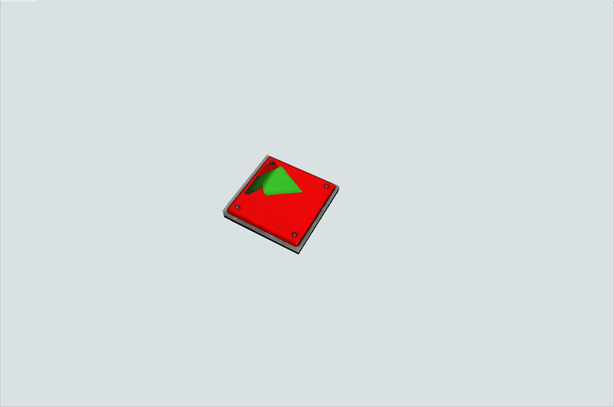 |
|
Rails and Curvedrails |
Rails are the objects that represent the paths used by the trains to travel on the created system. |
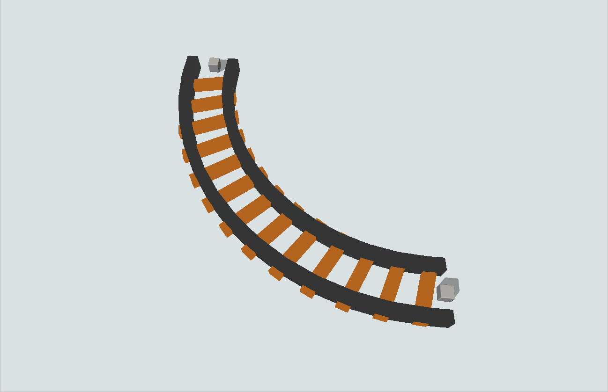 |
|
Signalized Rail |
Signalized rails are rails that have railway signals for traffic control. |
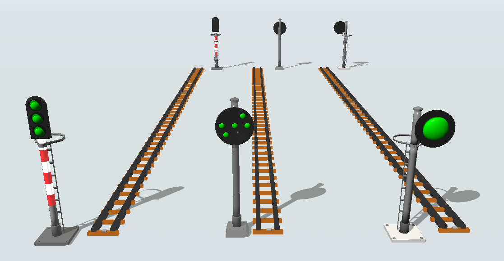 |
|
Rail System |
The object Rail System is responsible for organizing the rails in groups and applying custom properties for each group. |
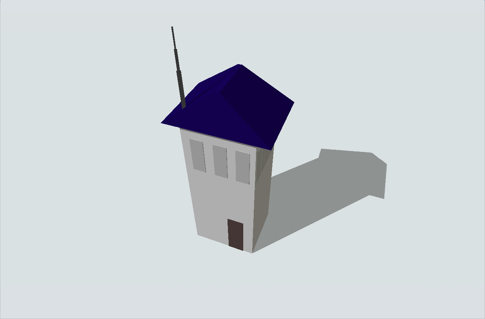 |
|
Rail Control Point |
You can add the Rail Control Point object at any part of the rail, this object signals that there is a task to be fulfilled at that position. |
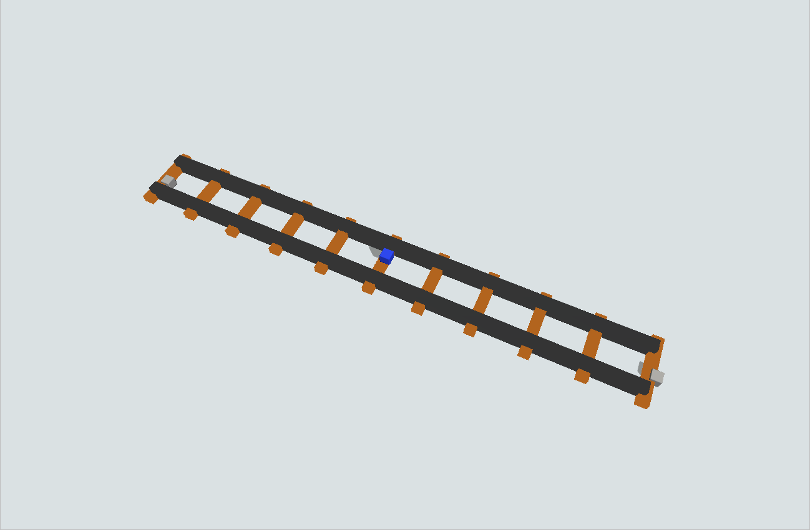 |
|
Station |
One of the objects that can be connected to the Rail Control Point is the Station, its functionality is to make the train interact with the default FlexSim objects. |
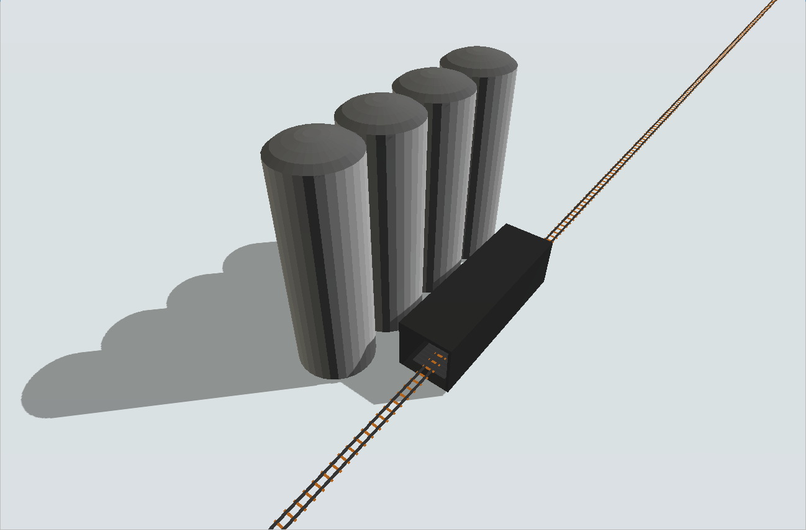 |
|
Locomotive |
Locomotives are responsible for dictating the train power and speed. |
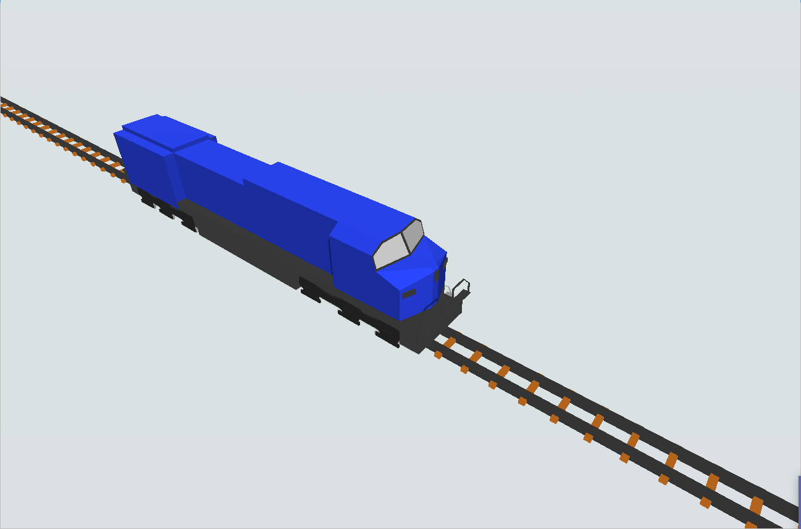 |
|
Wagon |
Wagons are responsible for keeping values like the weight of the train load. |
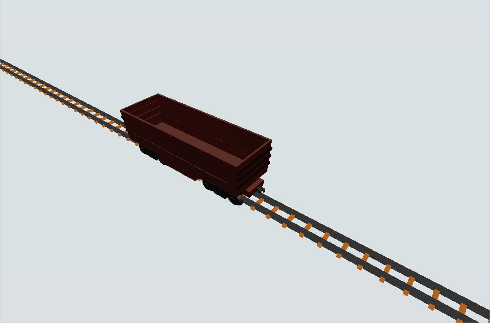 |
|
Rail Crane |
The RailCrane is also used for loading and unloading Flowitens from our Wagons, but different from the Station, it has an animation where the Flowitem is moved with the crane. |
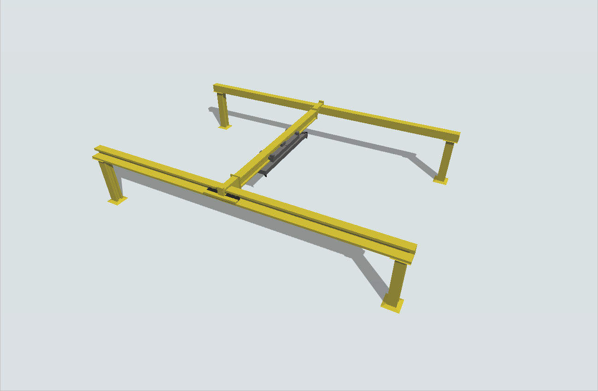 |
|
GIS Portal |
GIS Portal is responsible for connecting the Rail object with the GIS Map. |
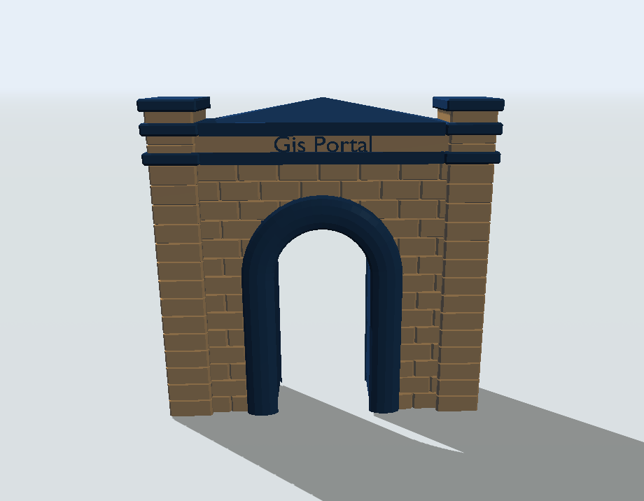 |
The Source Train object creates, with the help of the Process Flow , the trains that can be used in the simulation. The Source Train itself does not create the train, but it needs to be used alongside the Process Flow task that creates the train.
Source Train
The Source Train object has the following custom triggers:
| Name | Description |
|---|---|
| onCreate | Fires when a train is created using the Souce Train object that fired the trigger. |
Rails are the objects that represent the paths used by the trains to travel on the created system. They come in two types: rail and curved rail. Each Rail/Curved Rail represents a sector on the rail system, meaning that each object will hold only one locomotive at a time.
To connect a rail to another rail simply drag its end to the beginning of another rail, their Connect Points will connect to each other instantly and the system will recognize this connection as a possible path. In order to make a train move within the rails, you must tell it what its destiny is via the Process Flow activity Move Train.
Rail Object
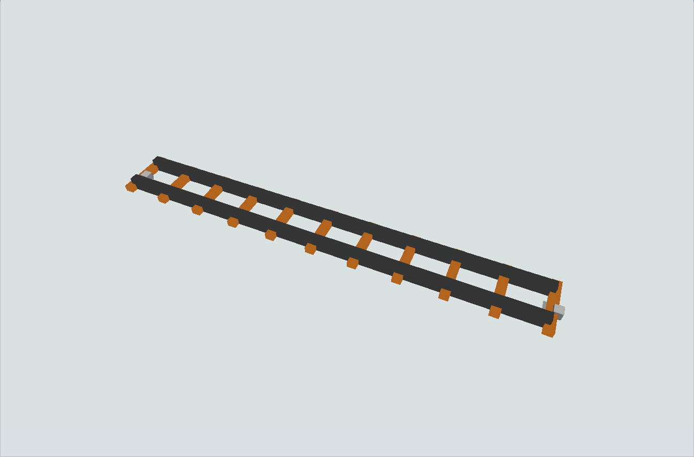
CurvedRail Object
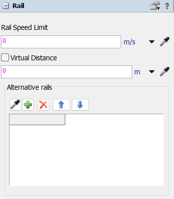
The following properties are on the Rail panel:
Rail Speed Limit: Sets the speed limit for the
selected rail.
Virtual Distance: Sets if virtual distance will
be used and the virtual distance for the selected rail.
Alternative rails: Sets a table with alternative
rails for travels when the current rail is occupied.
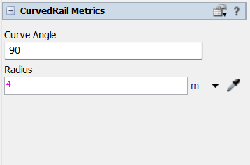
The following properties are on the CurvedRail panel:
Curve Angle: Sets the angle for the selected
CurvedRail.
Radius: Sets the radius for the selected
CurvedRail.
The Rail object has the following custom triggers:
| Name | Description |
|---|---|
| onEntry | Fires when a Locomotive or Wagon enters the Rail. |
| onExit | Fires when a Locomotive or Wagon leaves the Rail. |
Signalized rails are rail that have railway signals for traffic control and safety. It has all the features of a Rail with the added function of signaling. For correct modeling, Signalized Rails of the same section have the same number and type of aspect. To use it, simply configure the aspects of your signal in RailSystem and you can change the aspect, limit the maximum speed of the train according to the aspect, change the sighting and safety distance.
Signalized Rail 3D object variations
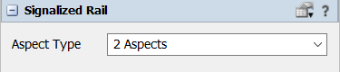
The following properties:
Aspect Type: Field for choosing the aspect of the rail signal.
Set the same type of aspect on the Signalized Rail connected to the section. Every rail will
be created with the default Aspect Type setted on Signal Settings panel.
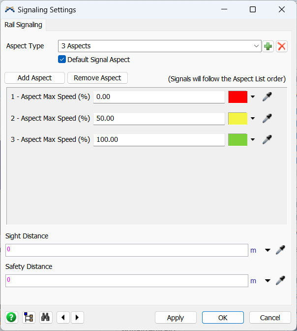
The following properties:
Aspect Type list: List with default Aspect Types and the option to the user add or remove a Type from the list using the + or x buttons.The object Rail System is responsible for organizing the rails in groups and applying custom properties for each group, such as the rail speed limit and the algorithm used for path decision. On the creation of the first rail of the model, a Rail System is created automatically.
Rail System
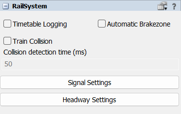
The following properties are on the RailSystem panel:
Timetable Logging: Sets if the timetable will
be created and populated for the current simulation. See more about the
RailwayTimetable tool.
Automatic Brakezone: Sets if the simulation will
automatically detect occupied tracks and create brake events.
Train Collision: Sets if the simulation will detect collisions
among trains.
Collision detection time (ms): Sets the time between each
verification of collisions.
Signal Settings: Open the panel to configure the signal system.
Headway Settings: Open the headway settings panel. See more about the
Headway feature.
The RailSystem object has the following custom triggers:
| Name | Description |
|---|---|
| onCollision | Fires when a collision happens. |
You can add the Rail Control Point object at any part of the rail, this object signals that there is a task to be fulfilled at that position. The train is always trying to figure out what its next destiny is, if the next destination is the Rail Control Point it activates that task.
The configuration of what type of task it holds is done on the current Rail Control Point, and the other objects involved in this task should be connected to the Rail Control Point as well. All the communication between the Rail Control Point and the object doing the task is made through message exchange.
Rail Control Point
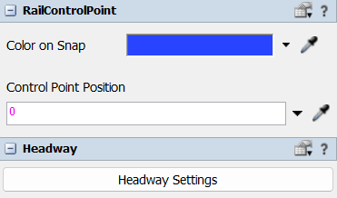
The following properties are on the Station panel:
Color on Snap: Sets the color of the object
when it is connected to Rail.
Control Point Position: Sets the position of the object
on the rail. The position value is in relation to the rail.
Headway Settings: Configures the headway. See more about the
Headway feature.
The RailControlPoint object has the following custom triggers:
| Name | Description |
|---|---|
| onArrival | Fires when a Locomotive or Wagon arrives at the Control Point. |
| onPass | Fires when a Locomotive passes through a Control Point object, extending the effects to its coupled wagons. It is possible to define new values for the Train speed table. The trigger alternative rails verifies if the rail is available, otherwise change the direction to another rail set as alternative. |
| onContinue | Fires when a Locomotive departs from a previous Control Point stop, extending the effects to its coupled wagons. |
One of the objects that can be connected to the Rail Control Point is the Station, its functionality is to make the train interact with the default FlexSim objects, it can load or unload the wagons by consuming or creating Flowitens depending on the task, and assigning its value to the Wagon object, or even refuel the train.
Station
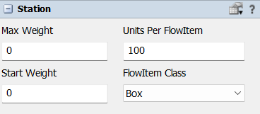
The following properties are on the Station panel:
Max Weight: Sets the max weight for the
selected Station.
Units Per FlowItem: Sets the "Units Per
FlowItem" rate. That means that one flow item will be X units in
the Station.
Start Weight: Sets the starting weight for the
selected Station.
FlowItem Class: Sets the type of FlowItem that
the Station will produce.
The Station object has the following custom triggers:
| Name | Description |
|---|---|
| onFuel | Fires when the station is fueling a Locomotive or Wagon. |
| onLoad | Fires when the Station is loading something into a Locomotive or Wagon. |
| onUnload | Fires when the Station is unloading something into a Locomotive or Wagon. |
The train is divided into a few Task Executers as Flowitens, you can have two types of Task Executers, the Locomotive and the Wagon, Locomotives are responsible for dictating the train power and speed, while Wagons are responsible for keeping values like the weight of its load. Locomotives can be added from the drag and drop library, and connected to rails using A key, then using AssignLabel to bring it to ProcessFlow.
Freight Locomotive
Passenger Locomotive
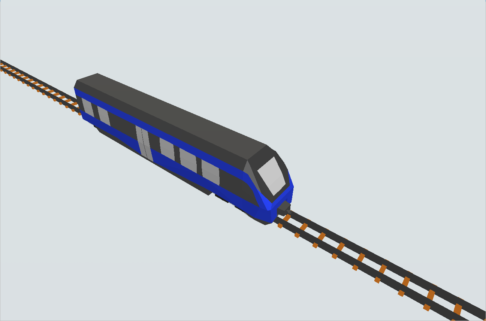
Ore Wagon
Passenger Wagon
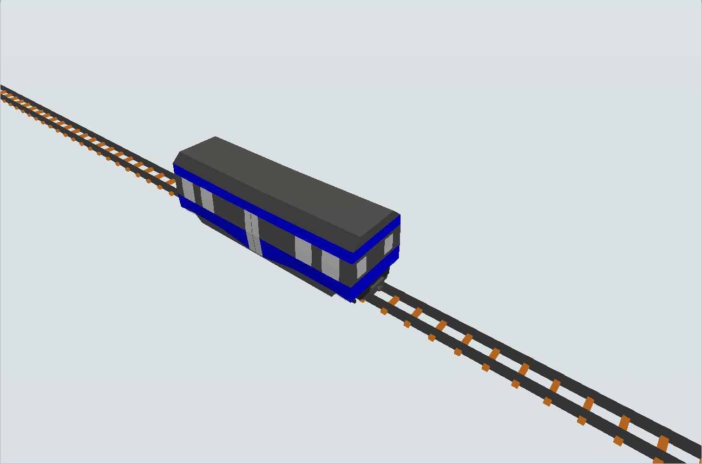
Hopper Wagon
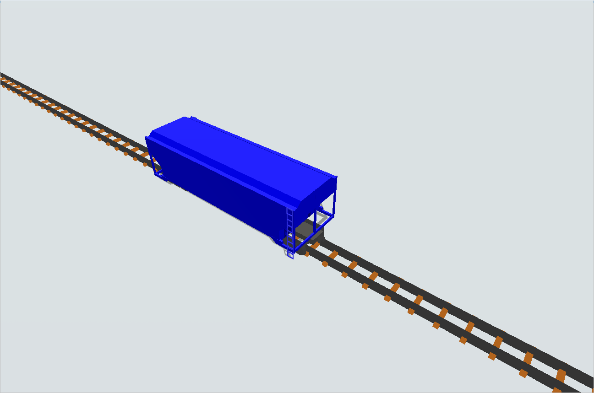
Platform Wagon
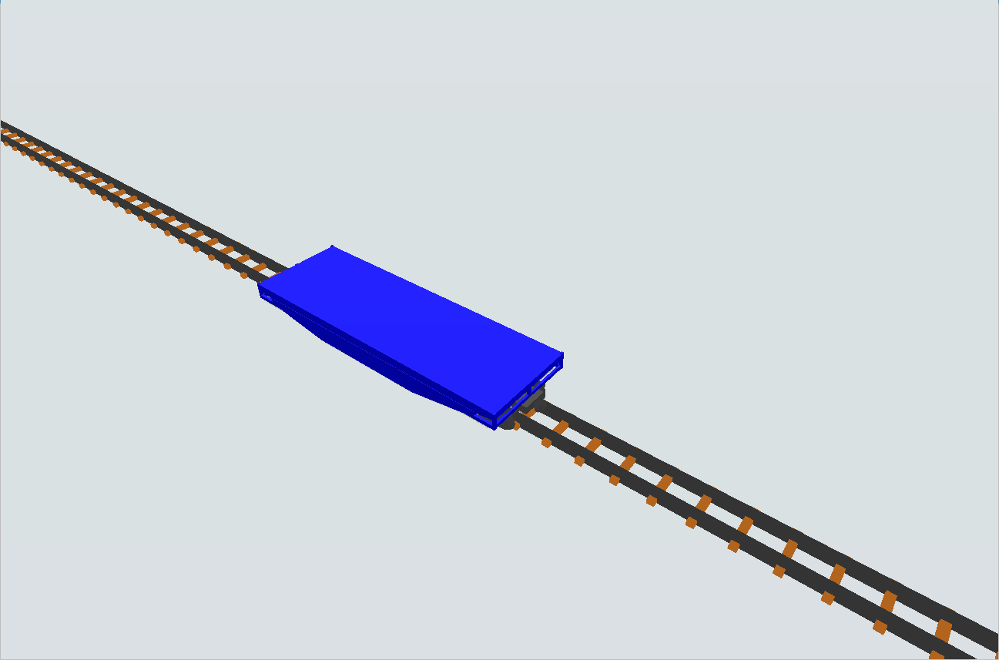
Tank Wagon
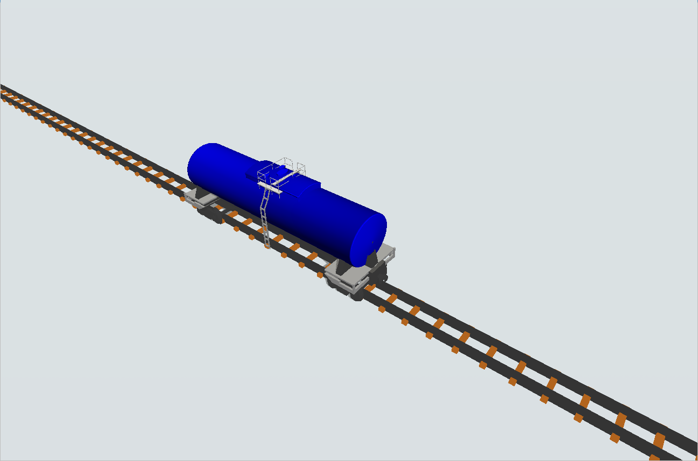
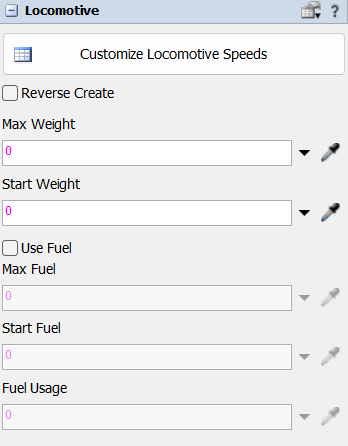
The following properties are on the Locomotive panel:
Customize Locomotive Speeds: Pops up the speed table
allowing customized acceleration, deceleration, uncoupled and coupled max speeds values
for loaded and unloaded scenarios.
Reverse Create: Sets if the train will be
created reversed.
Max Weight: Sets the max weight that the train
will be able to carry.
Start Weight: Sets the initial weight for the
train.
Max Fuel: Sets the max fuel that the train will
have.
Start Fuel: Sets the initial fuel for the
train.
Fuel Usage: Sets the fuel usage per unit.
The RailCrane is also used for loading and unloading Flowitens from our Wagons, but different from the Station, it has an animation where the Flowitem is moved with the crane. This object is responsible for the communication between the RailWorks library objects and the default FlexSim objects, it connects the train on the rail with a Queue by default.
Rail Crane
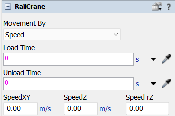
The following properties are on the RailCrane panel:
Movement By: Sets the type of calculation to
the movement, that can be "Speed" or "Time".
Load Time: Sets the Load Time for the selected
RailCrane.
Unload Time: Sets the Unload Time for the
selected RailCrane.
SpeedXY: Sets the speed in the XY axis.
SpeedZ: Sets the speed in the Z axis.
Speed rZ: Sets the speed for the rotation on
the Z axis.
The Station object has the following custom triggers:
| Name | Description |
|---|---|
| onLoad | Fires when the RailCrane is loading something into a Locomotive or Wagon. |
| onUnload | Fires when the RailCrane is unloading something into a Locomotive or Wagon. |
The GIS Portal object works as a connector for the Rail and the GIS Map functionality within FlexSim, with a simple connection with the Rail and the GIS Map's Point object.
It creates a TaskExecuter connected to de GIS Map and configure everything to send the train to another point, once the travel is finished it also erases the unnused objects and sets the train on the destination Rail so it can continue to travel/work with RailWorks's library activities.
GIS Portal
GIS Portal as a Sign
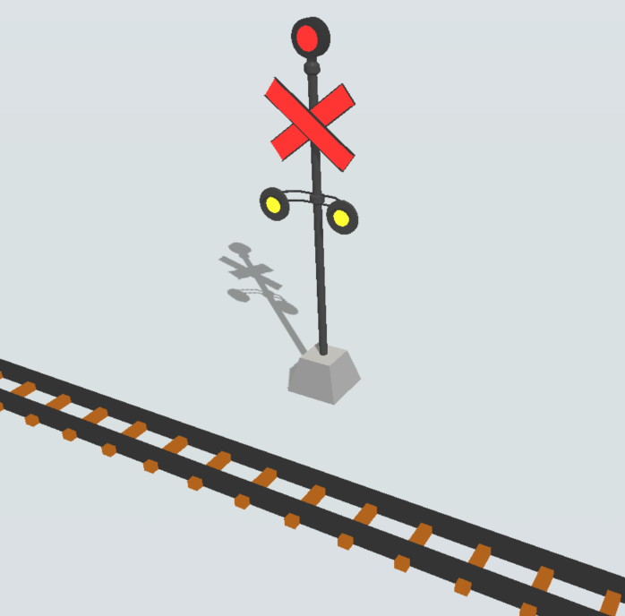
This object does not need a custom properties panel since it functions within basic FixedResource's functionality. It is expected that all the control of the ports can be configured with the built in options. All you have to do is connect (A) to a GISMap Point and connect (A) with another GISPortal to set it as a destination.
Using the Send to Port field configuration you can control to which GIS Map point your train will be sent.